Lab 1 b. Edit Driver for adding HII
- Open C:\fw\edk2\MyWizardDriver
- Open the following files for updating:
- MyWizardDriverNVDataStruc.h
- MyWizardDriver.vfr
- MyWizardDriver.uni
- MyWizardDriver.h
- MyWizardDriver.c
- MyWizardDriver.inf
- Update the MyWizardDriverNVDataStruc.h file by copying and pasting the following GUID as shown below: This GUID is used to communicate to the HII Database and Browser Engine
#define MYWIZARDDRIVER_FORMSET_GUID \ { \ 0x5481db09, 0xe5f7, 0x4158, 0xa5, 0xc5, 0x2d, 0xbe, 0xa4, 0x95, 0x34, 0xff \ } - Save MyWizardDriverNVDataStruc.h
Update the MyWizardDriver.vfr file. Delete its contents and replace it with the following by copying and pasting: You’re adding a reference to the GUID and to the NVRAM storage where the configuration will be saved. In fact, you’re replacing most of the original .vfr.
#include "MyWizardDriverNVDataStruc.h" formset guid = MYWIZARDDRIVER_FORMSET_GUID, title = STRING_TOKEN(STR_SAMPLE_FORM_SET_TITLE), help = STRING_TOKEN(STR_SAMPLE_FORM_SET_HELP), classguid = EFI_HII_PLATFORM_SETUP_FORMSET_GUID, // // Define a Buffer Storage (EFI_IFR_VARSTORE) // varstore MYWIZARDDRIVER_CONFIGURATION, // This is the data structure type //varid = CONFIGURATION_VARSTORE_ID, // Optional VarStore ID name = MWD_IfrNVData, // Define referenced name in vfr guid = MYWIZARDDRIVER_FORMSET_GUID; // GUID of this buffer storage- Continue adding the remaining code to MyWizardDriver.vfr. This is a Enable/ Disable question for the setup menu in the form of a Check box.
form formid = 1, title = STRING_TOKEN(STR_SAMPLE_FORM1_TITLE);
subtitle text = STRING_TOKEN(STR_SUBTITLE_TEXT);
subtitle text = STRING_TOKEN(STR_SUBTITLE_TEXT2);
//
// Define a checkbox to enable / disable the device
//
checkbox varid = MWD_IfrNVData.MyWizardDriverChooseToEnable,
prompt = STRING_TOKEN(STR_CHECK_BOX_PROMPT),
help = STRING_TOKEN(STR_CHECK_BOX_HELP),
//
// CHECKBOX_DEFAULT indicate this checkbox is marked
// with EFI_IFR_CHECKBOX_DEFAULT
//
flags = CHECKBOX_DEFAULT ,
key = 0,
default = 1,
endcheckbox;
endform;
endformset;
7). Save MyWizardDriver.vfr
8). Update MyWizardDriver.uni file. You’ll add new strings to support the forms. Delete the file’s content and replace it with the following by copying and pasting:
#langdef en "English"
#string STR_SAMPLE_FORM_SET_TITLE #language en "My Wizard Driver Sample Formset"
#string STR_SAMPLE_FORM_SET_HELP #language en "Help for Sample Formset"
#string STR_SAMPLE_FORM1_TITLE #language en "My Wizard Driver"
#string STR_SUBTITLE_TEXT #language en "My Wizard Driver Configuration"
#string STR_SUBTITLE_TEXT2 #language en "Device XYZ Configuration"
#string STR_CHECK_BOX_PROMPT #language en "Enable My XYZ Device"
#string STR_CHECK_BOX_HELP #language en "This is the help message for the enable My XYZ device. Check this box to enable this device."
9). Save MyWizardDriver.uni
10). Update the MyWizardDriver.h file. Add the following HII libraries starting at approximately line 41 (as shown below) by copying and pasting:
// Added for HII
#include <Protocol/HiiConfigRouting.h>
#include <Protocol/FormBrowser2.h>
#include <Protocol/HiiString.h>
#include <Library/DevicePathLib.h>
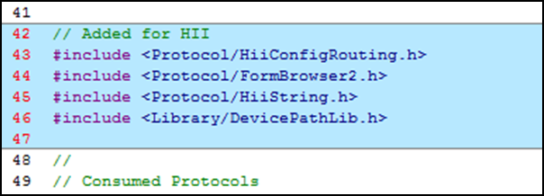
11). To add a data structure for HII routing and access, add the following code at approximately line 75 by copying and pasting after the “extern” statements:
#define MYWIZARDDRIVER_DEV_SIGNATURE SIGNATURE_32 ('m', 'w', 'd', 'r')
// Need a Data structure for HII routing and accessing
typedef struct {
UINT32 Signature;
EFI_HANDLE Handle;
MYWIZARDDRIVER_CONFIGURATION Configuration;
EFI_HANDLE DriverHandle[2];
EFI_HII_HANDLE HiiHandle[2];
//
// Consumed protocol
//
EFI_HII_DATABASE_PROTOCOL *HiiDatabase;
EFI_HII_STRING_PROTOCOL *HiiString;
EFI_HII_CONFIG_ROUTING_PROTOCOL *HiiConfigRouting;
EFI_FORM_BROWSER2_PROTOCOL *FormBrowser2;
//
// Produced protocol
//
EFI_HII_CONFIG_ACCESS_PROTOCOL ConfigAccess;
} MYWIZARDDRIVER_DEV;
#define MYWIZARDDRIVER_DEV_FROM_THIS(a) CR (a, MYWIZARDDRIVER_DEV, ConfigAccess, MYWIZARDDRIVER_DEV_SIGNATURE)
#pragma pack(1)
///
/// HII specific Vendor Device Path definition.
///
typedef struct {
VENDOR_DEVICE_PATH VendorDevicePath;
EFI_DEVICE_PATH_PROTOCOL End;
} HII_VENDOR_DEVICE_PATH;
#pragma pack()
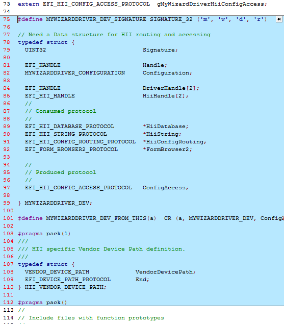
12). Save MyWizardDriver.h
13). Update MyWizardDriver.c file.
Add local definitions for the form GUID, variable name, and device path for HII at approximately line 13 after the #include "MyWizardDriver.h" by coping and pasting the following code.
In this step, you declare a local (to the module “m”) variable for the GUID we declared; the NVRAM variable name; driver handles; our configuration data; and the device path support.
// Begin code
//HII support
EFI_GUID mMyWizardDriverFormSetGuid = MYWIZARDDRIVER_FORMSET_GUID;
CHAR16 mIfrVariableName[] = L"MWD_IfrNVData";
EFI_HANDLE mDriverHandle[2] = {NULL, NULL};
MYWIZARDDRIVER_DEV *PrivateData = NULL;
// HII support for Device Path
HII_VENDOR_DEVICE_PATH mHiiVendorDevicePath = {
{
{
HARDWARE_DEVICE_PATH,
HW_VENDOR_DP,
{
(UINT8) (sizeof (VENDOR_DEVICE_PATH)),
(UINT8) ((sizeof (VENDOR_DEVICE_PATH)) >> 8)
}
},
MYWIZARDDRIVER_FORMSET_GUID
},
{
END_DEVICE_PATH_TYPE,
END_ENTIRE_DEVICE_PATH_SUBTYPE,
{
(UINT8) (END_DEVICE_PATH_LENGTH),
(UINT8) ((END_DEVICE_PATH_LENGTH) >> 8)
}
}
};
// end code
14). Locate EFI_STATUS within the function MyWizardDriverDriverEntryPoint in the MyWizardDriver.cfile (approx. Line 184) and add HII local definitions by copying and pasting (as shown below):
// HII Locals
EFI_HII_PACKAGE_LIST_HEADER *PackageListHeader;
EFI_HII_DATABASE_PROTOCOL *HiiDatabase;
EFI_HII_HANDLE HiiHandle[2];
EFI_STRING ConfigRequestHdr;
UINTN BufferSize;
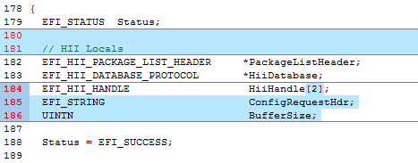
15). Locate the ASSERT_EFI_ERROR (Status); statement and the line: // Retrieve HII Package List Header on ImageHandle (approximately line 202). Now, add the following code to install the configuration access protocol (produced) by copying and pasting (as shown below) before the line: // Retrieve HII Package List Header on ImageHandle
//Now do HII Stuff
// Initialize the local variables.
ConfigRequestHdr = NULL;
// Initialize driver private data
PrivateData = AllocateZeroPool (sizeof (MYWIZARDDRIVER_DEV));
if (PrivateData == NULL) {
return EFI_OUT_OF_RESOURCES;
}
PrivateData->Signature = MYWIZARDDRIVER_DEV_SIGNATURE;
PrivateData->ConfigAccess.ExtractConfig = MyWizardDriverHiiConfigAccessExtractConfig;
PrivateData->ConfigAccess.RouteConfig = MyWizardDriverHiiConfigAccessRouteConfig;
PrivateData->ConfigAccess.Callback = MyWizardDriverHiiConfigAccessCallback;
//
// Publish sample Fromset and config access
//
Status = gBS->InstallMultipleProtocolInterfaces (
&mDriverHandle[0],
&gEfiDevicePathProtocolGuid,
&mHiiVendorDevicePath,
&gEfiHiiConfigAccessProtocolGuid,
&PrivateData->ConfigAccess,
NULL
);
ASSERT_EFI_ERROR (Status);
PrivateData->DriverHandle[0] = mDriverHandle[0];
// end code
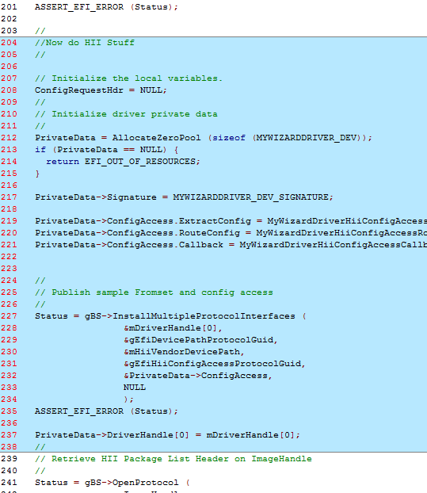
16). Next, add code to register a list of HII packages in the HII Database with the HII device path. This requires you to replace existing code (see below) by copying and pasting the new code at approx. line 265.
Old Code
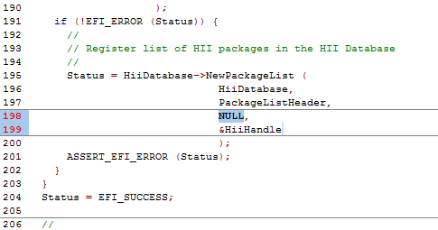
mDriverHandle[0],
&HiiHandle[0]
New Code
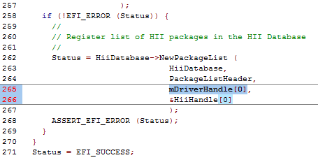
17). Next, you’ll add code to initialize the My Wizard Driver NVRAM variable by copying and pasting the following code before the// Install Driver Supported EFI Version Protocol onto ImageHandle comment (as shown below at approximately line 273):
// Begin code
PrivateData->HiiHandle[0] = HiiHandle[0];
BufferSize = sizeof (MYWIZARDDRIVER_CONFIGURATION);
// IF driver is not part of the Platform then need to get/set defaults for the NVRAM configuration that the driver will use.
Status = gRT->GetVariable (
mIfrVariableName,
&mMyWizardDriverFormSetGuid,
NULL,
&BufferSize,
&PrivateData->Configuration
);
if (EFI_ERROR (Status)) { // Not definded yet so add it to the NV Variables.
// zero out buffer
ZeroMem (&PrivateData->Configuration, sizeof (MYWIZARDDRIVER_CONFIGURATION));
Status = gRT->SetVariable(
mIfrVariableName,
&mMyWizardDriverFormSetGuid,
EFI_VARIABLE_NON_VOLATILE | EFI_VARIABLE_BOOTSERVICE_ACCESS,
sizeof (MYWIZARDDRIVER_CONFIGURATION),
&PrivateData->Configuration // buffer is 000000 now
);
}
// end code
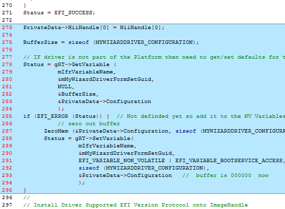
18). Save MyWizardDriver.c
19). Now onto the final file, MyWizardDriver.inf. Add the following protocols in the [protocols] section that are being used by copying and pasting (as shown below):
gEfiHiiStringProtocolGuid ## CONSUMES
gEfiHiiConfigRoutingProtocolGuid ## CONSUMES
gEfiFormBrowser2ProtocolGuid ## CONSUMES
gEfiHiiDatabaseProtocolGuid ## CONSUMES
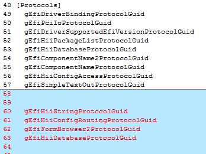
20). Save the MyWizardDriver.inf file. All the files should be saved at this point.
21). Add MyWizardDriver.inf to the Nt32Pkg.dsc(See Lab 2building MyWizardDriver from the Driver Porting Lab)
Build and test MyWizardDriver
- Re-Open the Visual Studio Command Prompt
- Type build
- Type build run
- At the UEFI Shell prompt,type fs0:
- Type Load MyWizardDriver.efi
- Press “Enter” This will load your driver into memory
- Type exit
- Now at the setup front page menu, select “Device Manager” 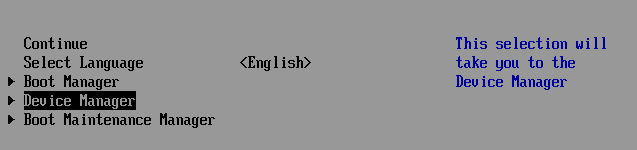
- Press “Enter” to enter “Device Manager”
Inside the Device Manager menu press the down to “My Wizard Driver Sample Formset”** Press "Enter" 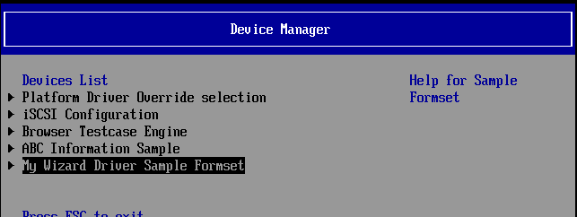
Press "Enter" 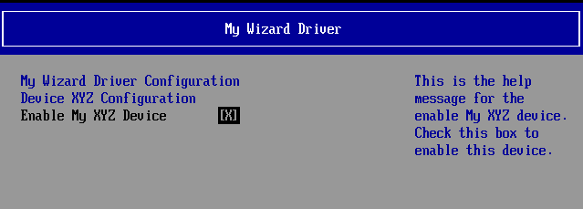
Note: Notice that your form is now displayed with a choice to enable your device. Also notice the titles and help strings that are in the .UNI file you edited.
At this point since the HII configuration routing functions are not functional the values (Enable/ Disable) will not be saved to NVRAM. The next lab will update the HII Extract, Route, and call back functions for the HII configuration routing protocol your driver will produce.Press the space bar to Enable and Disable the “Enable My XYZ Device”
- Press F10 to attempt to save
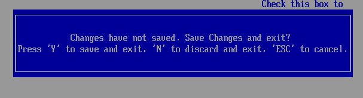
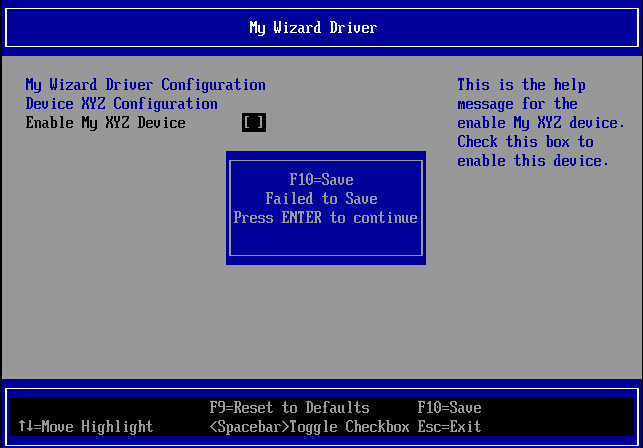
Note: You’re not able to save the data changes at this point. - Press “Enter”**
- Press “Escape”, and then “Y” to exit*
- To Exit the “Device Manager” Page: Press “Escape” 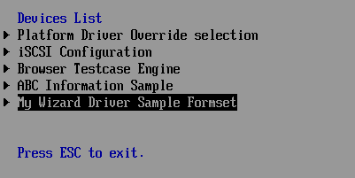
- Press Up Arrow to “Continue”** 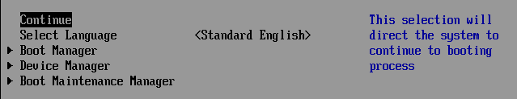
- At the Shell prompt type Reset
- Press “Enter” to return to the Visual Studio Command Prompt
You’ve completed the first lab and added strings and forms to setup HII for user configuration. However, the data is not saved to NVRAM. In the next lab, you’ll learn how to update HII to save data to NVRAM.
For any build issues copy the solution files from C:\Fw\LabSolutions\LessonE.1A